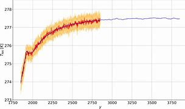
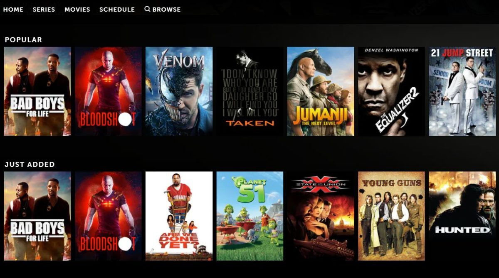
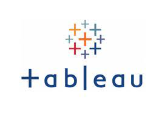
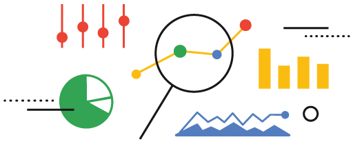
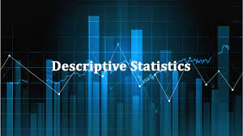

As a Data Scientist in a non-governmental organization, I was tasked with predicting climate change and impacts in Africa and report the state of climate change at the upcoming African Union Summit. On this task, I utilized some machine learning algorithms to predict the climate changes in the year 2025 across the regions discovered in the dataset.
The data was gotten from kaggle.
The combined data source integrates information from four distinct tables, providing a comprehensive overview of various aspects related to the organization's workforce. The combined data source thus offers a holistic view of the organization's workforce dynamics, encompassing employee feedback, job structure, office locations, and attrition information. This integrated dataset enables a more comprehensive analysis of the relationships and trends within the organization over time
">People Analyics - HR Employee Attrition and Workforce Dynamics
The year was 2018 and the FIFA World Cup that year was hosted by Russia. The World Cup 2018 squad dataset was handed over to explore. As a Data Analyst in the Analytics team of a Football Academy company, my task was to uncover some hidden insights to help optimize the business's scouting decisions.
The Director of Football Analytics would like to know the extent of insights that can be uncovered from the dataset and make recommendations to improve and optimize the scouting strategies of the firm.
The year was 2018 and the FIFA World Cup that year was hosted by Russia. The World Cup 2018 squad dataset was handed over to explore. As a Data Analyst in the Analytics team of a Football Academy company, my task was to uncover some hidden insights to help optimize the business's scouting decisions.
The Director of Football Analytics would like to know the extent of insights that can be uncovered from the dataset and make recommendations to improve and optimize the scouting strategies of the firm.
As a Data Analyst in a not-for-profit international education organization, I utilized historical data of the Bridge Kenya Programme to assess the impact of the program in 111 schools, in 7 provinces across 31 regions in Kenya. The data was for over 13,000 pupils from grades 1-5 from the end of an undisclosed school term in the past five years.
As a Data Analyst in a movie entertainment firm, I was tasked to scrape data for the top 250 movies from the IMDb website and perform an Exploratory Data Analysis (EDA) on the scraped data in order to answer some business questions.
In this project, I gathered data on housing project in Nashville, USA and cleaned the dataset in SQL Server to answer some questions on housing problems in the area.
Real-world data rarely comes clean. Using Python and its libraries, I gathered data from a variety of sources and in a variety of formats, assessed its quality and tidiness, then cleaned it. I documented my wrangling efforts in a Jupyter Notebook, plus showcased them through analyses and visualizations using Python (and its libraries).
The dataset that I wrangled (analyzed and visualized) is the tweet archive of Twitter user @dog_rates, also known as WeRateDogs. WeRateDogs is a Twitter account that rates people's dogs with a humorous comment about the dog. These ratings almost always have a denominator of 10. The numerators, though? Almost always greater than 10. 11/10, 12/10, 13/10, etc. Why? Because "they're good dogs Brent." WeRateDogs has over 4 million followers and has received international media coverage.
WeRateDogs downloaded their Twitter archive and sent it to Udacity via email exclusively for me to use in this project. This archive contains basic tweet data (tweet ID, timestamp, text, etc.) for all 5000+ of their tweets as they stood on August 1, 2017
In this project, I wanted to look at the features of loans that could be used to predict their Borrower APR. The main emphasis was on the Loan Original Amount, borrower's Prosper Rating (Alpha), loan term (Term), and borrower's Stated Monthly Income.
The dataset consisted of Borrower APRs and attributes of 113,937 loans. The attributes included Loan Original Amount, borrower's Prosper Rating (Alpha), loan term (Term), borrower's Stated Monthly Income, as well as many other features such as borrower's Employment Status, Debt To Income Ratio, Current Loan Status, etc. 352 data points were removed from the analysis due to very large stated monthly income that seemed as outliers and missing borrower APR information.
I utilized Python libary visualization packages - matplotlib and seaborn to provide interesting insights and relationships among the loan features and their effects on the Borrower APR.

The primary goal of the project is to go through the general data analysis process — using basic data analysis technique with NumPy, pandas, and Matplotlib. The movie dataset, which is originally from Kaggle, was cleaned and provided by Udacity. According Kaggle introduction page, the data contains information that are provided from The Movie Database (TMDb). It collects 5000+ movies basic move information and movie matrices, including user ratings, popularity and revenue data. These metrics can be seen as how successful these movies are. The movie basic information contained like cast, director, keywords, runtime, genres, etc.
As a Data Analyst in an Automotive firm in Calgary, AB, Canada, my Product Manager just approached me and want to know how efficient the makes of vehicles the company sells have performed over a period of time. I was given access to the automobile dataset consisting of key variables needed to answer the questions being asked by my Product Manager. I used my expertise in NumPy, Pandas, matplotlib, seaborn to wrangle the data, analyzed it, performed some visualizations, in order to unravel trends to answer the questions asked by the business.
Performed Data Exploration of Covid-19 Dataset in SQL Server. The dataset was gotten from ourworldindata.org/covid-deaths. I changed the dataset from csv file to excel, then imported into SQL server for exploration to uncover some interesting insights.

Performed analysis of the movie industry dataset to ascertain the level of correlation among some of the movie features in the dataset using some Python libary packages like NumPy, Pandas, matplotlib, seaborn. The dataset was gotten from Kaggle.
As a Data Analyst in the hospitality industry, I built a hotel database in SQL Server and connected it to Power BI. Basically, I performed analysis on the hotel dataset from the database in SQL Server, then imported it into Power BI for further analyses and visualizations to uncover further insights in answering some business questions.
Performed analysis on a case study on the Product Category of a global eCommerce firm. I used Python libabry packages to wrangle, analyzed and visualized the dataset to answer the questions posed by the stakeholders.

This contains all my Tableau Dashboards and Projects.
Performed data cleaning, created Pivot Tables, created visuals, and builded dashboards in Excel using Bikes Buyers dataset.
Performed Time Series Analysis and forecasting on the sales of Product Categories across the various Market Segments for the next six months. Provided analytics that will aid proper estimation and effective planning of inventory and business processes.

This is a capstone project for the completion of Google Data Analyst Professional Certificate with Python using NumPy, Pandas, matplotlib, seaborn and Scilearn libary packages.

Performed descriptive analytics and visualizations on the dataset for Boston Housing Prices derived from the United States Census Service. Python library packages were utilized for this task.
Performed analysis to unravel the causes and impacts of fire incidents in some Nigerian markets in 2020. This analysis helped to derive actionable insights about the markets in which these recurring fires have occurred and made recommendations on what could be done to reduce the causes of these incidents in the future.
Performed analysis and visualizations in R using Bellabeat (a wellness Technology Company), as a case study. I utilized differerent packages in R to draw different insights and made recommendations on how Bellabeat can play it smart in the fitness industry. The dataset for this analysis came from FitBit Fitness Tracker Data on Kaggle.
Performed analysis on products dataset as a Data Analyst in an Application Development firm in Ontario, Canada. The company just developed a mobile game application targeted at young people between the ages of 18 and 45. This mobile application has recorded tremendous success since the launch with over 100 million downloads recorded on various OS platforms. I used Python libary packages to unravel the mobile OS usage on different platforms in order to optimize the business process.